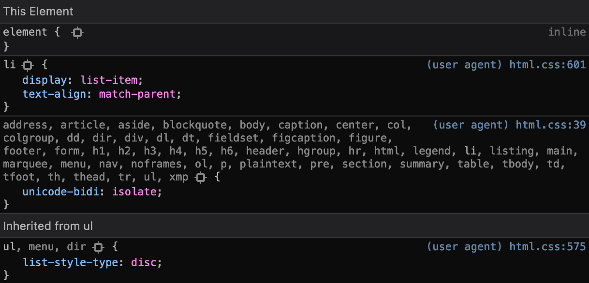

Reset CSS vs Normalize.css
Cette recette a été publiée le
Cas d'usage étudié
Chaque navigateur peut apporter du style par défaut sur des éléments HTML. On parle de user-agent stylesheet. Ils sont présents afin de satisfaire à une attente générale de présentation. Différant entre navigateurs et même plateformes, ce style provoque occasionnellement des décalages de rendu entre eux.

Solutions proposées
Au pluriel car il y a 2 écoles :
- Annuler la plupart des styles définis par le user agent, afin d’avoir les éléments les plus neutres possible. Idéal si vous avez une maquette à respecter, une idée du rendu que vous souhaitez ou avez le moindre doute. Il s'agit d'une réinitialisation.
- Accorder les rendus entre navigateurs, en conservant certains styles par défaut. Parfait pour avoir du style simple et satisfaire cette fameuse attente générale de présentation. Nous parlons alors de normalisation.
Réinitialisation : Reset CSS ou minireset
Traversant les âges, le bon vieux reset CSS d’Eric A. Meyer se retrouve sur de nombreux projets web. Des alternatives apportant parfois des styles par défaut complémentaires existent, et c’est pourquoi nous privilégions minireset ou the new css reset. Ces derniers ont l’avantage de définir le box-sizing à border-box.
Nous vous montrons le code détaillé afin de voir par vous-même son contenu. N’hésitez pas à prendre une version minifiée sur le site d’origine, ou le minifier par vos propres moyens.
/*! minireset.css v0.0.6 | MIT License | github.com/jgthms/minireset.css */
/**
* Reset paddings and margins.
*/
html,
body,
p,
ol,
ul,
li,
dl,
dt,
dd,
blockquote,
figure,
fieldset,
legend,
textarea,
pre,
iframe,
hr,
h1,
h2,
h3,
h4,
h5,
h6 {
margin: 0;
padding: 0;
}
button,
input,
select {
margin: 0;
}
td,
th {
padding: 0;
}
/**
* Reset the font on headings
*/
h1,
h2,
h3,
h4,
h5,
h6 {
font-size: 100%;
font-weight: normal;
}
/**
* Remove list style.
*/
ul {
list-style: none;
}
/**
* Set box-sizing to border-box on all elements.
*/
html {
box-sizing: border-box;
}
*, *::before, *::after {
box-sizing: inherit;
}
/**
* Reset size on some media elements.
*/
img,
video {
height: auto;
max-width: 100%;
}
/**
* Remove iframe border.
*/
iframe {
border: 0;
}
/**
* Normalize table.
*/
table {
border-collapse: collapse;
border-spacing: 0;
}Normalisation
Normalize CSS s’adresse à ceux souhaitant conserver un peu de style par défaut, aligner les rendus que proposent les différents user agent entre navigateurs et en corriger quelques inconsistances. Il sera toujours possible d’ajouter du style par dessus pour compléter voire ajuster celui-ci.
Nous vous montrons le code détaillé afin de voir par vous-même son contenu. N’hésitez pas à prendre une version minifiée sur le site d’origine, ou le minifier par vos propres moyens.
/*! normalize.css v8.0.1 | MIT License | github.com/necolas/normalize.css */
/* Document
========================================================================== */
/**
* 1. Correct the line height in all browsers.
* 2. Prevent adjustments of font size after orientation changes in iOS.
*/
html {
line-height: 1.15; /* 1 */
-webkit-text-size-adjust: 100%; /* 2 */
}
/* Sections
========================================================================== */
/**
* Remove the margin in all browsers.
*/
body {
margin: 0;
}
/**
* Render the `main` element consistently in IE.
*/
main {
display: block;
}
/**
* Correct the font size and margin on `h1` elements within `section` and
* `article` contexts in Chrome, Firefox, and Safari.
*/
h1 {
font-size: 2em;
margin: 0.67em 0;
}
/* Grouping content
========================================================================== */
/**
* 1. Add the correct box sizing in Firefox.
* 2. Show the overflow in Edge and IE.
*/
hr {
box-sizing: content-box; /* 1 */
height: 0; /* 1 */
overflow: visible; /* 2 */
}
/**
* 1. Correct the inheritance and scaling of font size in all browsers.
* 2. Correct the odd `em` font sizing in all browsers.
*/
pre {
font-family: monospace, monospace; /* 1 */
font-size: 1em; /* 2 */
}
/* Text-level semantics
========================================================================== */
/**
* Remove the gray background on active links in IE 10.
*/
a {
background-color: transparent;
}
/**
* 1. Remove the bottom border in Chrome 57-
* 2. Add the correct text decoration in Chrome, Edge, IE, Opera, and Safari.
*/
abbr[title] {
border-bottom: none; /* 1 */
text-decoration: underline; /* 2 */
text-decoration: underline dotted; /* 2 */
}
/**
* Add the correct font weight in Chrome, Edge, and Safari.
*/
b,
strong {
font-weight: bolder;
}
/**
* 1. Correct the inheritance and scaling of font size in all browsers.
* 2. Correct the odd `em` font sizing in all browsers.
*/
code,
kbd,
samp {
font-family: monospace, monospace; /* 1 */
font-size: 1em; /* 2 */
}
/**
* Add the correct font size in all browsers.
*/
small {
font-size: 80%;
}
/**
* Prevent `sub` and `sup` elements from affecting the line height in
* all browsers.
*/
sub,
sup {
font-size: 75%;
line-height: 0;
position: relative;
vertical-align: baseline;
}
sub {
bottom: -0.25em;
}
sup {
top: -0.5em;
}
/* Embedded content
========================================================================== */
/**
* Remove the border on images inside links in IE 10.
*/
img {
border-style: none;
}
/* Forms
========================================================================== */
/**
* 1. Change the font styles in all browsers.
* 2. Remove the margin in Firefox and Safari.
*/
button,
input,
optgroup,
select,
textarea {
font-family: inherit; /* 1 */
font-size: 100%; /* 1 */
line-height: 1.15; /* 1 */
margin: 0; /* 2 */
}
/**
* Show the overflow in IE.
* 1. Show the overflow in Edge.
*/
button,
input { /* 1 */
overflow: visible;
}
/**
* Remove the inheritance of text transform in Edge, Firefox, and IE.
* 1. Remove the inheritance of text transform in Firefox.
*/
button,
select { /* 1 */
text-transform: none;
}
/**
* Correct the inability to style clickable types in iOS and Safari.
*/
button,
[type="button"],
[type="reset"],
[type="submit"] {
-webkit-appearance: button;
}
/**
* Remove the inner border and padding in Firefox.
*/
button::-moz-focus-inner,
[type="button"]::-moz-focus-inner,
[type="reset"]::-moz-focus-inner,
[type="submit"]::-moz-focus-inner {
border-style: none;
padding: 0;
}
/**
* Restore the focus styles unset by the previous rule.
*/
button:-moz-focusring,
[type="button"]:-moz-focusring,
[type="reset"]:-moz-focusring,
[type="submit"]:-moz-focusring {
outline: 1px dotted ButtonText;
}
/**
* Correct the padding in Firefox.
*/
fieldset {
padding: 0.35em 0.75em 0.625em;
}
/**
* 1. Correct the text wrapping in Edge and IE.
* 2. Correct the color inheritance from `fieldset` elements in IE.
* 3. Remove the padding so developers are not caught out when they zero out
* `fieldset` elements in all browsers.
*/
legend {
box-sizing: border-box; /* 1 */
color: inherit; /* 2 */
display: table; /* 1 */
max-width: 100%; /* 1 */
padding: 0; /* 3 */
white-space: normal; /* 1 */
}
/**
* Add the correct vertical alignment in Chrome, Firefox, and Opera.
*/
progress {
vertical-align: baseline;
}
/**
* Remove the default vertical scrollbar in IE 10+.
*/
textarea {
overflow: auto;
}
/**
* 1. Add the correct box sizing in IE 10.
* 2. Remove the padding in IE 10.
*/
[type="checkbox"],
[type="radio"] {
box-sizing: border-box; /* 1 */
padding: 0; /* 2 */
}
/**
* Correct the cursor style of increment and decrement buttons in Chrome.
*/
[type="number"]::-webkit-inner-spin-button,
[type="number"]::-webkit-outer-spin-button {
height: auto;
}
/**
* 1. Correct the odd appearance in Chrome and Safari.
* 2. Correct the outline style in Safari.
*/
[type="search"] {
-webkit-appearance: textfield; /* 1 */
outline-offset: -2px; /* 2 */
}
/**
* Remove the inner padding in Chrome and Safari on macOS.
*/
[type="search"]::-webkit-search-decoration {
-webkit-appearance: none;
}
/**
* 1. Correct the inability to style clickable types in iOS and Safari.
* 2. Change font properties to `inherit` in Safari.
*/
::-webkit-file-upload-button {
-webkit-appearance: button; /* 1 */
font: inherit; /* 2 */
}
/* Interactive
========================================================================== */
/*
* Add the correct display in Edge, IE 10+, and Firefox.
*/
details {
display: block;
}
/*
* Add the correct display in all browsers.
*/
summary {
display: list-item;
}
/* Misc
========================================================================== */
/**
* Add the correct display in IE 10+.
*/
template {
display: none;
}
/**
* Add the correct display in IE 10.
*/
[hidden] {
display: none;
}